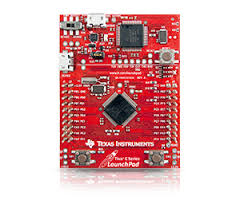

January 14, 2014 (3 hour):
Met as a team after class to discuss preliminary project proposal.
Played and evaluated previous ScalePad MIDI controller builds.
Microcontrollers and development platforms were researched. Initial options include Intel Atom motherboard, Beagleboards, SHARC development kit, and the Tiva C launchpad with an ARM Cortex-M4F .
January 15, 2014 (2 hours):
Researched patents and prior art. Selected Patents US 5841053 A, US 8426716 B2, DE 202013104376 U1 on Google Patents to write up on initial project proposal. Image shown illustrates DE 202013104376 U1 implemented in the Ableton Push.
January 16, 2014 (2 hours):
Researched commercial product analysis. Most closely related products include the Ableton Push, Korg Kaoss Pad Quad, and the Misa Kitara. The Ableton Push contains the element of a remappable key grid, the Kaoss Pad Quad includes the element of x-y grid audio effect control, and the Kitara contains some elements of both with a touch screen controlled synthesizer.
January 15, 2014 (2 hours):
Patent and commercial product analyses were written in the initial project proposal for submission.
WEEK 01 SUMMARY
Accomplishments: The preliminary project proposal was completed without issue. Potential platforms were investigated at length, and the initial project goal seems very feasible.
Weekly Work Total: 9 hours
Project Work Total: 9 hours
January 20, 2014 (2 hours):
Read through segments of Jonathan W. Valvano’s “Introduction to ARM Cortex-M Microcontrollers.” Topics included ARM assembly language programming techniques and available modules on the microcontroller.
Different modules for touch interaction were researched. The originally desired capacitive multi touch screens and controllers proved difficult to obtain as individual units with adequate documentation. Single point resistive touch screens showed more promise with touch, LCD, and controller units designed for rapid prototyping.
January 23, 2014 (4 hours):
Team meeting collaborated on final project proposal. PSSC’s were discussed at length and individual homework assignments were delegated.
The Tiva C launchpad was determined to be our development platform of choice. The MCU is a TM4C123GH6PMI ARM Cortex M4F. Advantages include a floating point unit with a single cycle multiply accumulate and an optimized DSP library. Motherboards were determined to be overkill.

WEEK 02 SUMMARY
Accomplishments: PSSC and project proposal finalized.
Weekly Work Total: 6 hours
Project Work Total: 15 hours
January 27, 2014 (2 hours):
Research on alternative input methods sought to enable velocity sensitive input. Potential methods include hall effect sensors, FSR’s, PCB carbon contacts, and large scale ADC with calibration algorithm. Velocity adjustment was also determined to be possible through the touch screen if original plan of tactile switches and PISO registers is used.
January 29, 2014 (3 hours):
Completed PCB assignment in Eagle. Built library parts for the team per tutorial and located footprints for standard parts in the built in library. Schematic build and layout went without issue.
WEEK 03 SUMMARY
Accomplishments: PCB excercise completed.
Weekly Work Total: 5hours
Project Work Total: 20 hours
February 4, 2014 (2 hours):
Met with the team in the lab after class period to go over design constraint analysis. DAC samples from Cirrus Logic arrived, recovered leftover parts from previous MIDI controller builds.
February 5, 2014 (8 hours):
Met with the team in the lab with the team to agree upon specifics of the design constraint analysis. Found that the Cirrus Logic DAC samples will not interface with the selected Tiva C MPU due to a lack of I2S unit (usually limited to DSP chips).
Received the Tiva C launchpad to evaluate.
Ordered an assortment of different tactile switches for evaluation. Also ordered MIDI connectors and ¼ inch audio connectors for development.
Samples of key components were ordered from TI including:
TSC2046- 4-Wire Touch Screen Controller with low voltage digital I/O
DRV135- Audio Balanced Line Drivers
TM4C123GH6PM- Tiva C Series Microcontroller
TM4C1230H6PM- Tiva C Series Microcontroller
February 4, 2014 (2 hours):
Team meeting finalized components of design constraint analysis, primarily the bill of materials. The team took an opportunity to test out a previous build of the Scale Pad MIDI controller and spent time discussing potential changes to the PSSCs.
WEEK 04 SUMMARY
Accomplishments:
Weekly Work Total: 12 hours
Project Work Total: 32 hours